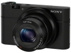

器材库 > 不可换镜头数码相机 > DSC-RX100

规格总览
发布日期
2012-06-06
厂家推荐价格
650.00 （美元）
影像规格
影像传感器
CMOS
影像传感器尺寸
1.0英寸
总像素
2090万
有效像素
2020万
影像处理器
BIONZ
静态图像格式
JPEG, RAW
静态图像尺寸
[3：2]L：20M(5472×3648);[16：9]L：17M(5472×3080);[4：3]L：18M(4864×3648)/VGA;[1：1]L：13M(3648×3648)
画幅比
3:2, 4:3, 16:9
短片尺寸
AVCHD：28M PS(1920×1080,50P)/24M FX (1920×1080,50i)/17M FH(1920×1080,50i);MP4：12M(1440×1080,30/25 fps)/3M VGA(640×480,30/25 fps)
防抖系统
光学防抖
镜头和对焦
镜头结构
7片/6组
非球面镜片
4(含AA镜片)片
焦距
10.4mm-37.1mm
等效35mm画幅焦距
28mm-100mm
最大光圈
f/1.8-4.9
光学变焦
3.6倍
数码变焦
7.2倍
最近对焦距离
5cm
对焦模式
单次AF/连续AF/DMF/手动对焦
手动对焦
支持
曝光控制
测光模式
中央重点测光, 评价测光, 点测光
场景模式
肖像/动作防抖/运动/宠物/美食/微距/风景/黄昏/夜景/手持夜景/夜景肖像/烟火/高感光度
快门速度
智能自动(4-1/2000)/程序自动(1-1/2000)/手动（B门，30-1/2000）/光圈优先(8-1/2000)/快门优先(30-1/2000)
曝光补偿
±3EV以1/3EV级调整
连拍
10fps
拍摄模式
智能自动/增强自动/程序自动/快门优先/光圈优先/手动曝光/场景选择/动态影像/扫描拍摄/调出存储
闪光灯
内置闪光灯
弹出式
闪光涵盖范围
W:0.3-17.1m/T:0.55-6.3m
取景规格
LCD类型
Xtra Fine LCD
LCD尺寸
3.0英寸
LCD像素
122.9万
文件输入/输出
记录媒介
SD/SDHC, SDXC, microSDHC, microSDXC
数据接口
USB2.0
视频/音频接口
HDMI 输出
电源
电池
锂离子NP-BX1
外观
材质
铝合金
颜色
黑色
尺寸
101.6×58.1×35.9mm
重量
213g
散客2016-10-03 22:194.19 分
操作性 4.00功能性 4.00美观性 4.50趣味性 4.00耐用性 4.00性价比 4.50解像力 4.50色彩还原 4.00
我用美能达2015-04-18 14:214.81 分
操作性 4.50功能性 5.00美观性 5.00趣味性 5.00耐用性 4.50性价比 5.00解像力 4.50色彩还原 5.00
小白龙GZ2014-10-21 14:434.38 分
操作性 4.00功能性 4.50美观性 4.50趣味性 4.00耐用性 4.00性价比 5.00解像力 4.50色彩还原 4.50
tennet2014-07-11 17:334.44 分
操作性 4.00功能性 5.00美观性 5.00趣味性 4.50耐用性 4.00性价比 4.50解像力 4.50色彩还原 4.00
cybertron2014-02-20 18:103.88 分
操作性 4.00功能性 4.00美观性 4.00趣味性 4.00耐用性 3.50性价比 4.50解像力 3.50色彩还原 3.50
arondes2014-02-03 06:034.5 分
操作性 4.00功能性 5.00美观性 4.50趣味性 4.50耐用性 4.50性价比 4.50解像力 5.00色彩还原 4.00
漠江2013-11-06 08:484.5 分
操作性 4.50功能性 4.00美观性 5.00趣味性 5.00耐用性 4.50性价比 4.50解像力 4.50色彩还原 4.00
水柔2013-09-23 09:434.06 分
操作性 4.50功能性 4.50美观性 4.50趣味性 4.00耐用性 4.00性价比 3.00解像力 4.00色彩还原 4.00
假能是条狗2013-09-03 17:344.31 分
操作性 4.50功能性 5.00美观性 4.00趣味性 5.00耐用性 4.00性价比 4.00解像力 4.00色彩还原 4.00
benz55f2013-08-22 09:574.81 分
操作性 5.00功能性 5.00美观性 5.00趣味性 4.50耐用性 4.50性价比 4.50解像力 5.00色彩还原 5.00
芳草街的方方土2013-05-19 17:254.5 分
操作性 5.00功能性 4.50美观性 4.00趣味性 5.00耐用性 4.50性价比 3.50解像力 5.00色彩还原 4.50
hkween2013-05-13 09:21
摄影像2013-03-25 20:44
canoff2013-03-08 15:134.81 分
操作性 4.50功能性 4.50美观性 5.00趣味性 5.00耐用性 5.00性价比 5.00解像力 4.50色彩还原 5.00
江湖人物2013-02-28 02:223.63 分
操作性 4.50功能性 4.00美观性 4.00趣味性 4.00耐用性 3.00性价比 1.00解像力 4.50色彩还原 4.00
karaoke2013-02-04 00:204 分
操作性 4.00功能性 4.00美观性 5.00趣味性 4.00耐用性 3.50性价比 3.50解像力 4.50色彩还原 3.50
ikinari2013-01-13 22:234.75 分
操作性 4.50功能性 5.00美观性 5.00趣味性 5.00耐用性 4.50性价比 5.00解像力 4.50色彩还原 4.50
三月龙2012-12-15 22:114.31 分
操作性 4.00功能性 4.50美观性 4.00趣味性 4.50耐用性 4.50性价比 4.00解像力 4.50色彩还原 4.50
手倦抛书2012-11-18 08:554.94 分
操作性 5.00功能性 5.00美观性 5.00趣味性 5.00耐用性 5.00性价比 4.50解像力 5.00色彩还原 5.00
红烧白菜2012-10-14 22:223.31 分
操作性 3.00功能性 3.50美观性 3.50趣味性 4.00耐用性 4.00性价比 1.00解像力 3.50色彩还原 4.00
manumotive2012-10-02 18:374.31 分
操作性 4.50功能性 4.50美观性 4.00趣味性 4.50耐用性 4.50性价比 3.00解像力 5.00色彩还原 4.50
老菲2012-09-28 14:264.75 分
操作性 5.00功能性 5.00美观性 5.00趣味性 5.00耐用性 5.00性价比 4.00解像力 4.50色彩还原 4.50
闲情偶摄2012-08-30 14:574.38 分
操作性 4.50功能性 4.50美观性 3.50趣味性 4.50耐用性 4.50性价比 3.50解像力 5.00色彩还原 5.00
割到手指2012-07-18 08:224.75 分
操作性 5.00功能性 5.00美观性 4.50趣味性 5.00耐用性 4.50性价比 4.00解像力 5.00色彩还原 5.00
Mr茶叶2012-07-13 14:254.56 分
操作性 4.50功能性 5.00美观性 4.50趣味性 5.00耐用性 4.50性价比 4.00解像力 4.50色彩还原 4.50
Pantrol2012-07-08 03:554.75 分
操作性 4.50功能性 4.50美观性 5.00趣味性 5.00耐用性 5.00性价比 4.00解像力 5.00色彩还原 5.00
产品图 / 样片
评测 / 相关文章
- 详细内容 （存档）
- “1”的延续 索尼DSC-RX100现场试用 （存档）
- 卡片机之王 索尼“黑卡”RX100试用 （存档）
- ［资讯］索尼RX100相机蒙皮DIY （存档）
- ［资讯］原味诱惑 定制版RX100手工木柄上市 （存档）
- ［试用］回归摄影真谛 我的口袋相机记录集 （存档）
- ［试用］RX100 DIY大倍率近摄镜拍微距 （存档）
- ［试用］NEX随手记 （存档）
- ［试用］黑卡双雄：RX1和RX100M2 （存档）
- ［资讯］全面轻量化裸奔便携摄影装 （存档）
- ［资讯］采用背照式传感器 索尼RX100M2升级细节 （存档）
- ［资讯］索尼RX100MII和RX1R手册曝光 （存档）
- ［试用］索尼RX100新西兰旅行—西岸冰河 （存档）
相关文章
- ［资讯］索尼RX100相机蒙皮DIY （存档）
- ［资讯］原味诱惑 定制版RX100手工木柄上市 （存档）
- ［试用］回归摄影真谛 我的口袋相机记录集 （存档）
- ［试用］RX100 DIY大倍率近摄镜拍微距 （存档）
- ［试用］NEX随手记 （存档）
- ［试用］黑卡双雄：RX1和RX100M2 （存档）
- ［资讯］全面轻量化裸奔便携摄影装 （存档）
- ［资讯］采用背照式传感器 索尼RX100M2升级细节 （存档）
- ［资讯］索尼RX100MII和RX1R手册曝光 （存档）
- ［试用］索尼RX100新西兰旅行—西岸冰河 （存档）
- ［资讯］索尼黑卡RX100镜头故障维修 （原站已下线）
- ［资讯］索尼RX100相机蒙皮DIY （原站已下线）
- ［资讯］原味诱惑 定制版RX100手工木柄上市 （原站已下线）
- ［试用］回归摄影真谛 我的口袋相机记录集 （原站已下线）
- ［试用］RX100 DIY大倍率近摄镜拍微距 （原站已下线）
- ［试用］NEX随手记 （原站已下线）
- ［试用］黑卡双雄：RX1和RX100M2 （原站已下线）
- ［资讯］全面轻量化裸奔便携摄影装 （原站已下线）
- ［资讯］采用背照式传感器 索尼RX100M2升级细节 （原站已下线）
- ［资讯］索尼RX100MII和RX1R手册曝光 （原站已下线）
- ［试用］索尼RX100新西兰旅行—风帆之都 （原站已下线）
- ［试用］索尼“黑卡”RX100新西兰发现之旅样张赏析 （原站已下线）
- ［试用］索尼RX100防滑贴皮DIY （原站已下线）